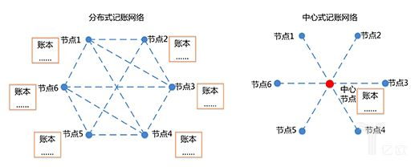

区块链初见
撰写于 2018-02-26 修改于 2018-02-26 分类 区块链原理
前言
一直有颗躁动的心，不想在做游戏了，技术能力到了瓶颈，很难突破了，需要高人指点了。本来想做大数据方向，奈何起步较晚，想做大数据的时候，牛人已经很多了。刚好区块链炒的很火，貌似国家也支持这个东西，干脆就赌一把，把所有身家压都在区块链上边。决定用1个月时间把原理部分搞懂个7、8成，然后就去尝试找工作。话不多说，转入正题。把最近几天学的东西，整理成blog。
什么是区块链
从技术角度上来讲，区块链本质上是一个去中心化的分布式账本数据库。要想理解这句话，就要先搞懂一个关键字：去中心化。
去中心化
要想搞懂去中心化，需要先明白什么是中心化。中心化，顾名思义就是要有一个中心机构去管理用户（或者客户端）。现代社会的经济体系中有很多都是中心化的经济体系，比如银行，支付宝，微信，包括各种应用中的B/S，C/S，都是这种中心化的体系。比如A客户端过银联转账给B客户，A需要向银行发起请求，银行接到请求后，会把A客户账本中的资金减少，同时把B客户账本中的资金增加。然后通知B客户，该转账业务完成。也就是客户所有的操作都有通过银行这个中心机构来处理。为什么人们会选择银行呢？信任！因为人们对银行，支付宝这些机构都很信任，觉得这些机构都很安全，但同时也要为这份信任买单。那这个体系有没有什么问题呢？当然有，而且是非常大的问题。还是拿银行来举例，由于所有的操作都要经过银行来处理，那银行一旦发生错误或者倒闭，客户的损失将会非常巨大。这时候，就需要去中心化的体系出现了。去中心化体系中没有中心机构这个概念，所有的操作都是P2P的。比如A借给B十万，那A和B同时声称完成了这笔交易，那这笔交易就算是完成了。但这也引出了另外两个问题：如果B赖账了，说没有借过A钱：或者B说借了A十块钱，不是十万；或者A说我借给了B五十万，其实只借了十万。也就是，没有了第三方的信任机构，如何保证交易信息的可信度和准确性。这就用到了区块链技术。

为了方便理解，先举一个简单的区中心借贷模型：如果A借给B十万元，B也收到了A转给他的十万元，A就在人群中广播：我是A，我借给了B十万元，B收到后，也在人群中广播：我是B，A借给我十万元。这时候人群中所有人都听到了这个消息，所有人都拿着一个记账的小册子，记下：A借给B十万元。如果A或者B想耍赖，那所有人都会拿出小册子来对比这个交易记录，来共同监督他们。有人可能会说，凭啥我要帮你记录交易信息？我的记账小册子不要钱吗？为了激励大家记账，大家事先约定，谁先听到这句话并记账，就给谁一百元。这时候大家都会聚精会神的听这句话，抢占第一个记账的权利。这时，是不是想到了“比特币挖矿”。